Chapter 13 Crib sheet for regression and ANOVA
13.1 Introduction
This document provides all the code chunks that may be useful in the context of the data analysis component of the assignment. The data set used to illustrate is the mussels data, that can be analysed using one way ANOVA and regression in the context of calibrating a relationship.
You should look through ALL the handouts provided on these techniques to understand the underlying theory. This “crib sheet” simply shows the most useful code.
- ALWAYS CHECK THAT THE STEPS HAVE BEEN TAKEN IN THE RIGHT ORDER.
- LOOK AT THE DATA YOU HAVE LOADED FIRST
- USE YOUR OWN VARIABLE NAMES
- PASTE IN CODE CHUNKS CAREFULLY; LEAVING GAPS BETWEEN EACH CHUNK
- COMMENT ON ALL THE STEPS
13.1.1 Packages needed
Include this chunk at the top of you analysis to ensure that you have all the packages. It also includes the wrapper to add buttons to a data table if you want to use this. Remember that data tables can only be included in HTML documents.
library(ggplot2)
library(dplyr)
library(mgcv)
library(DT)
theme_set(theme_bw())
dt<-function(x) DT::datatable(x,
filter = "top",
extensions = c('Buttons'), options = list(
dom = 'Blfrtip',
buttons = c('copy', 'csv', 'excel'), colReorder = TRUE
))13.2 Loading the data
Use read.csv with your own data set
d<-read.csv("https://tinyurl.com/aqm-data/mussels.csv")13.3 Finding out about the data
Checking the structure of the data.
str(d)## 'data.frame': 113 obs. of 3 variables:
## $ Lshell : num 122.1 100.1 100.7 102.3 94.9 ...
## $ BTVolume: int 39 21 23 22 20 22 21 18 21 15 ...
## $ Site : Factor w/ 6 levels "Site_1","Site_2",..: 6 6 6 6 6 6 6 6 6 6 ...You can also look at your data by clicking on the dataframe in the Global Environment window in R Studio.
13.4 Making your data available to others
13.4.1 NOTE THIS ONLY WORKS AS AN HTML DOCUMENT
dt(d)13.5 Subsetting
If you want to run an analysis for a single site (factor level) at a time, you can get a dataframe for just factor level.
s1<-subset(d,d$Site == "Site_1")
s1<-droplevels(s1)13.6 Data summaries for individual variables
Change the name of the variable to match a numerical variable in your own data set. The command removes NAs just in case you have them
summary(d$Lshell,na.rm=TRUE)## Min. 1st Qu. Median Mean 3rd Qu. Max.
## 61.9 97.0 106.9 106.8 118.7 132.613.7 Individual statistics for a single variable
Mean, median, standard deviation and variance.
mean(d$Lshell, na.rm=TRUE)## [1] 106.835median(d$Lshell, na.rm=TRUE)## [1] 106.9sd(d$Lshell, na.rm=TRUE)## [1] 14.84384var(d$Lshell, na.rm=TRUE)## [1] 220.339713.8 Simple boxplot of one variable
Useful for your own quick visualisation.
boxplot(d$Lshell)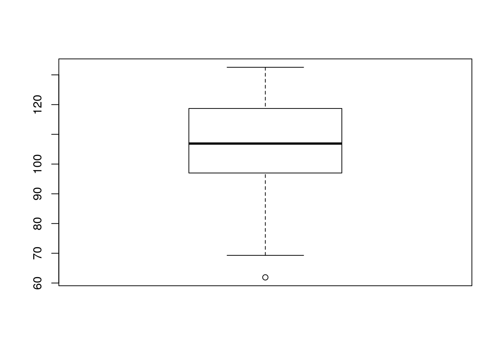
13.9 Simple histogram of one variable
Useful for your own quick visualisation.
hist(d$Lshell)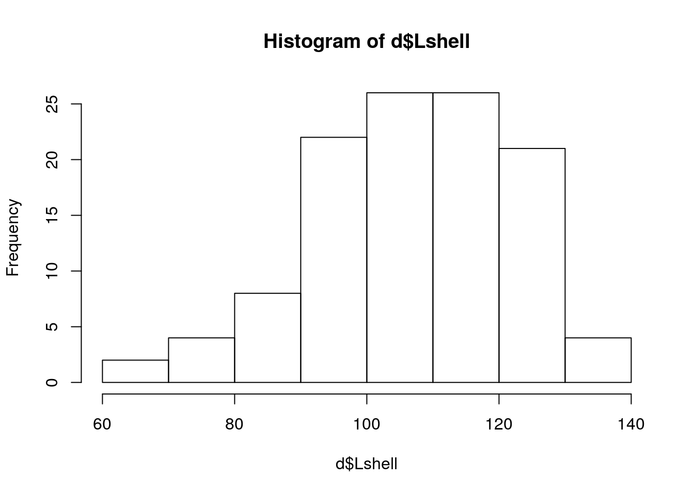
13.10 Neater histogram of one variable
This uses ggplot. Change the bin width if you want to use this.
g0<-ggplot(d,aes(x=d$Lshell))
g0+geom_histogram(color="grey",binwidth = 5)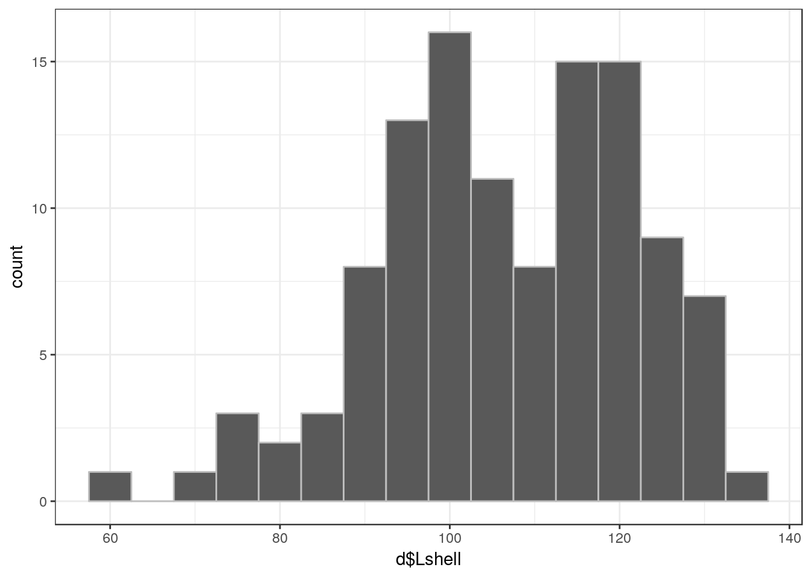
13.11 Regression
In this data set there are two numerical variables. So we can run a linear regresion.
13.12 Scatterplot without fitted line
g0<-ggplot(d,aes(x=Lshell,y=BTVolume))
g0+geom_point()
13.13 Scatterplot with fitted line and labels
Type the text you want for the x and y axes to replace the variable names
g0<-ggplot(d,aes(x=Lshell,y=BTVolume))
g1<-g0+geom_point() + geom_smooth(method="lm")
g1 + xlab("Some text for the x asis") + ylab("Some text for the y axis")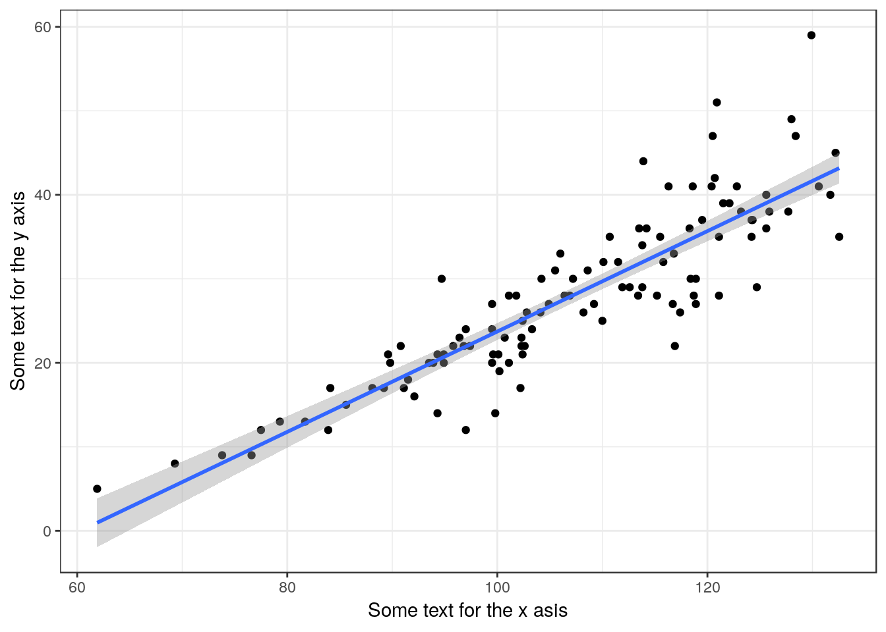
13.14 Fitting a model
Change the names of the variables in the first line.
mod<-lm(data= d, BTVolume~Lshell)13.15 Extracting residuals
d$residuals<-residuals(mod)13.16 Model summary
summary(mod)##
## Call:
## lm(formula = BTVolume ~ Lshell, data = d)
##
## Residuals:
## Min 1Q Median 3Q Max
## -11.828 -2.672 0.147 2.235 17.404
##
## Coefficients:
## Estimate Std. Error t value Pr(>|t|)
## (Intercept) -36.02385 3.33917 -10.79 <2e-16 ***
## Lshell 0.59754 0.03096 19.30 <2e-16 ***
## ---
## Signif. codes: 0 '***' 0.001 '**' 0.01 '*' 0.05 '.' 0.1 ' ' 1
##
## Residual standard error: 4.864 on 111 degrees of freedom
## Multiple R-squared: 0.7704, Adjusted R-squared: 0.7684
## F-statistic: 372.5 on 1 and 111 DF, p-value: < 2.2e-1613.17 Model anova table
anova(mod)## Analysis of Variance Table
##
## Response: BTVolume
## Df Sum Sq Mean Sq F value Pr(>F)
## Lshell 1 8811.4 8811.4 372.49 < 2.2e-16 ***
## Residuals 111 2625.7 23.7
## ---
## Signif. codes: 0 '***' 0.001 '**' 0.01 '*' 0.05 '.' 0.1 ' ' 113.18 Confidence intervals for the model parameters
confint(mod)## 2.5 % 97.5 %
## (Intercept) -42.6406346 -29.4070662
## Lshell 0.5361881 0.658889113.18.1 Model diagnostics
Look at the regression handout to understand these plots.
plot(mod,which=1)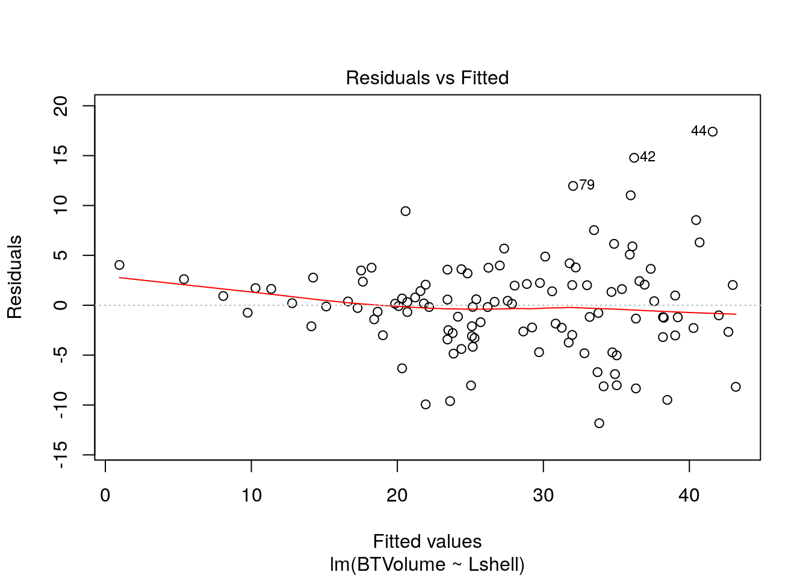
plot(mod,which=2)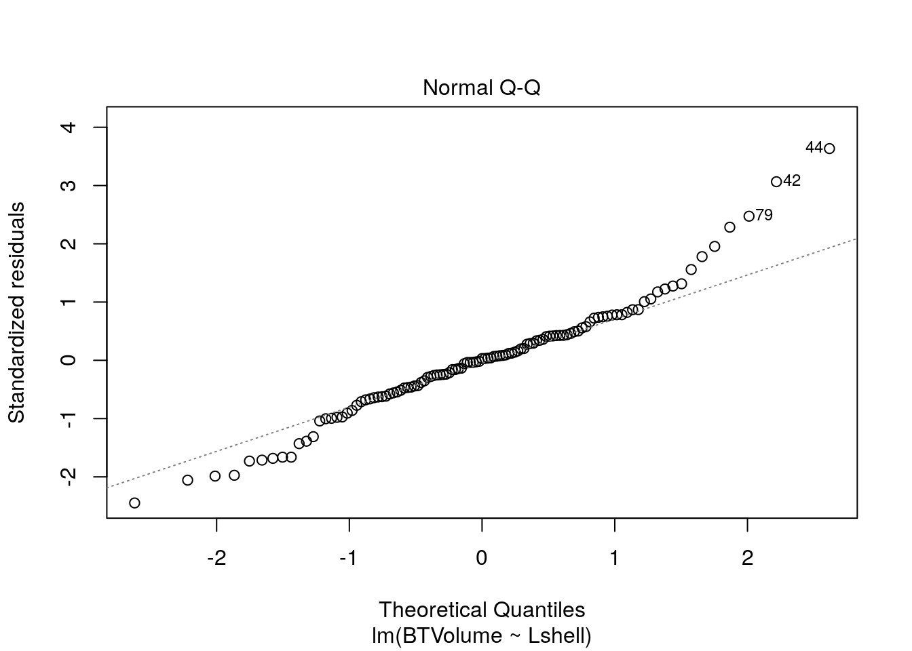
plot(mod,which=3)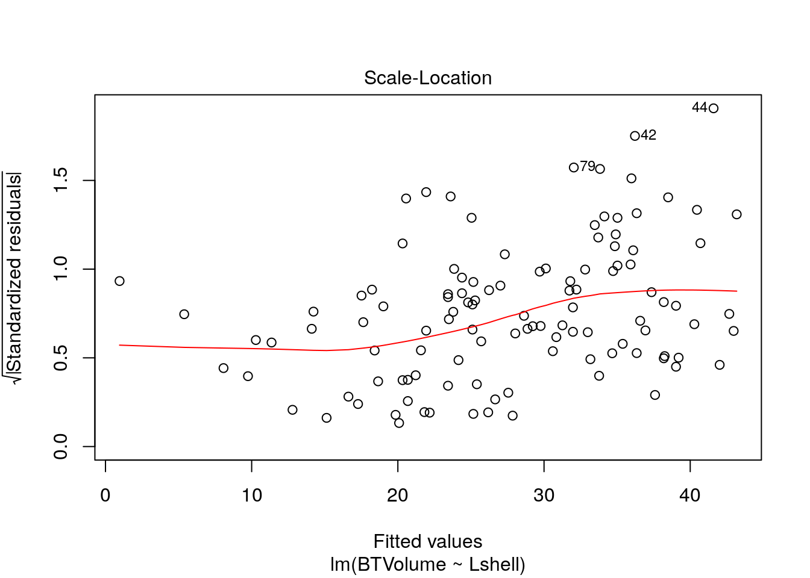
plot(mod,which=4)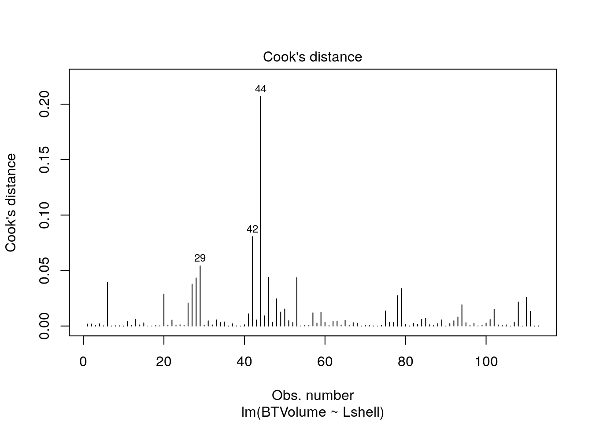
plot(mod,which=5)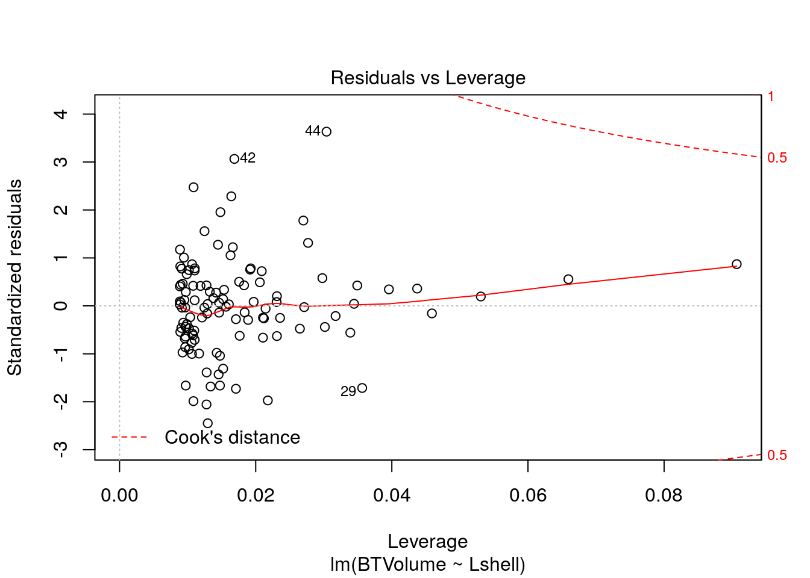
13.19 Spearman’s rank correlation
Used if all else fails. Not needed with these data, but included for reference.
g0<-ggplot(d,aes(x=rank(Lshell),y=rank(BTVolume)))
g0+geom_point() + geom_smooth(method="lm") 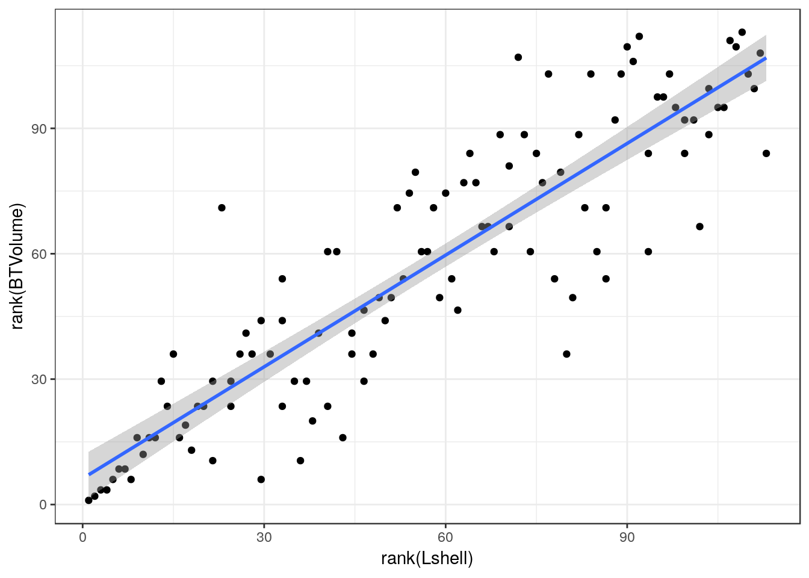
cor.test(d$Lshell,d$BTVolume,method="spearman")##
## Spearman's rank correlation rho
##
## data: d$Lshell and d$BTVolume
## S = 26143, p-value < 2.2e-16
## alternative hypothesis: true rho is not equal to 0
## sample estimates:
## rho
## 0.891280913.19.1 Fitting a spline
Only use if you suspect that the relationship is not well described by a straight line.
library(mgcv)
g0<-ggplot(d,aes(x=Lshell,y=BTVolume))
g1<-g0 + geom_point() + geom_smooth(method="gam", formula =y~s(x))
g1 + xlab("Some text for the x asis") + ylab("Some text for the y axis")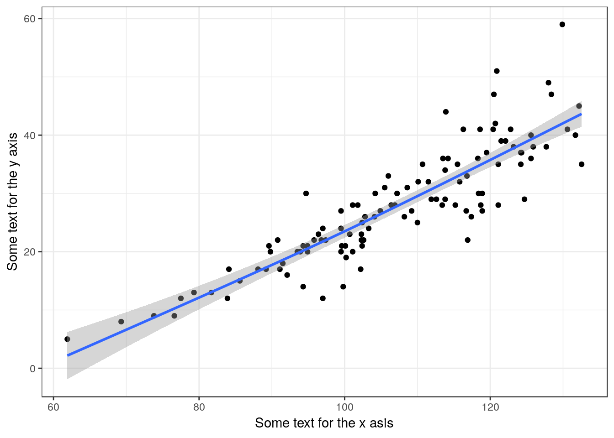
In this case the line is the same as the linear model. Get a summary using this code.
mod<-gam(data=d, BTVolume~s(Lshell))
summary(mod)##
## Family: gaussian
## Link function: identity
##
## Formula:
## BTVolume ~ s(Lshell)
##
## Parametric coefficients:
## Estimate Std. Error t value Pr(>|t|)
## (Intercept) 27.8142 0.4557 61.04 <2e-16 ***
## ---
## Signif. codes: 0 '***' 0.001 '**' 0.01 '*' 0.05 '.' 0.1 ' ' 1
##
## Approximate significance of smooth terms:
## edf Ref.df F p-value
## s(Lshell) 1.493 1.847 198.8 <2e-16 ***
## ---
## Signif. codes: 0 '***' 0.001 '**' 0.01 '*' 0.05 '.' 0.1 ' ' 1
##
## R-sq.(adj) = 0.77 Deviance explained = 77.3%
## GCV = 23.993 Scale est. = 23.463 n = 113If you do use this model remember that its only needed if you can’t use linear regression. Report the ajusted R squared value, the estimated degrees of freedom and the p-value for the smooth term (not the intercept). You must include the figure in your report, as that is the only way to show the shape of the response.
13.20 One way ANOVA
The purpose of one way anova is
- Test whether there is greater variability between groups than within groups
- Quantify any differences found between group means
13.20.1 Grouped boxplots
Exploratory plots
g0<-ggplot(d,aes(x=Site,y=Lshell))
g0+geom_boxplot()
13.21 Histograms for each factor level
g0<-ggplot(d,aes(x=d$Lshell))
g1<-g0+geom_histogram(color="grey",binwidth = 5)
g1+facet_wrap(~Site) +xlab("Text for x label") 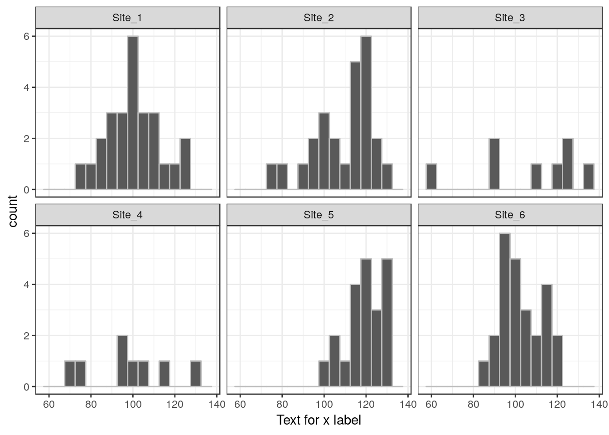
13.22 Confidence interval plot
g0<-ggplot(d,aes(x=Site,y=Lshell))
g1<-g0+stat_summary(fun.y=mean,geom="point")
g1<-g1 +stat_summary(fun.data=mean_cl_normal,geom="errorbar")
g1 +xlab("Text for x label") + ylab("Text for y label")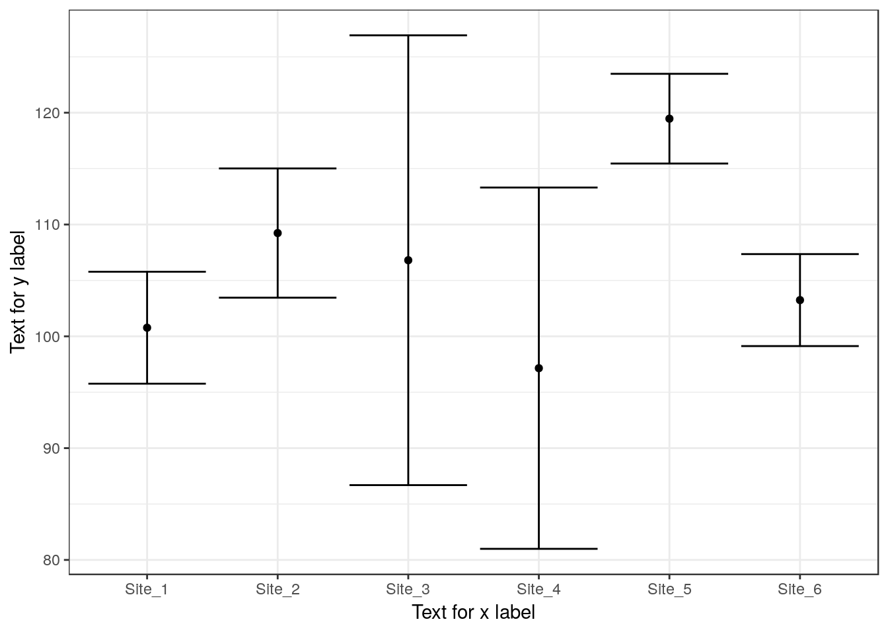
13.23 Fitting ANOVA
mod<-aov(data=d,Lshell~Site)
summary(mod)## Df Sum Sq Mean Sq F value Pr(>F)
## Site 5 5525 1105 6.173 4.58e-05 ***
## Residuals 107 19153 179
## ---
## Signif. codes: 0 '***' 0.001 '**' 0.01 '*' 0.05 '.' 0.1 ' ' 113.24 Tukey corrected pairwise comparisons
Use to find where signficant differences lie. This should confirm the pattern shown using the confidence interval plot.
mod<-aov(data=d,Lshell~Site)
TukeyHSD(mod)## Tukey multiple comparisons of means
## 95% family-wise confidence level
##
## Fit: aov(formula = Lshell ~ Site, data = d)
##
## $Site
## diff lwr upr p adj
## Site_2-Site_1 8.466769 -2.408905 19.342443 0.2201442
## Site_3-Site_1 6.037019 -9.660664 21.734702 0.8737518
## Site_4-Site_1 -3.619231 -19.316914 12.078452 0.9849444
## Site_5-Site_1 18.697436 7.305950 30.088922 0.0000867
## Site_6-Site_1 2.470769 -8.404905 13.346443 0.9859123
## Site_3-Site_2 -2.429750 -18.201132 13.341632 0.9976925
## Site_4-Site_2 -12.086000 -27.857382 3.685382 0.2355928
## Site_5-Site_2 10.230667 -1.262165 21.723498 0.1103764
## Site_6-Site_2 -5.996000 -16.977781 4.985781 0.6105029
## Site_4-Site_3 -9.656250 -29.069479 9.756979 0.7004668
## Site_5-Site_3 12.660417 -3.470986 28.791819 0.2123990
## Site_6-Site_3 -3.566250 -19.337632 12.205132 0.9862071
## Site_5-Site_4 22.316667 6.185264 38.448069 0.0015143
## Site_6-Site_4 6.090000 -9.681382 21.861382 0.8718474
## Site_6-Site_5 -16.226667 -27.719498 -4.733835 0.0011239plot(TukeyHSD(mod))
13.25 Anova with White’s correction
This will give you the overall Anova table if there is heterogeneity of variance.
library(sandwich)
library(car)
mod<-lm(Lshell~Site, data=d)
Anova(mod,white.adjust='hc3')## Analysis of Deviance Table (Type II tests)
##
## Response: Lshell
## Df F Pr(>F)
## Site 5 9.9682 7.541e-08 ***
## Residuals 107
## ---
## Signif. codes: 0 '***' 0.001 '**' 0.01 '*' 0.05 '.' 0.1 ' ' 1